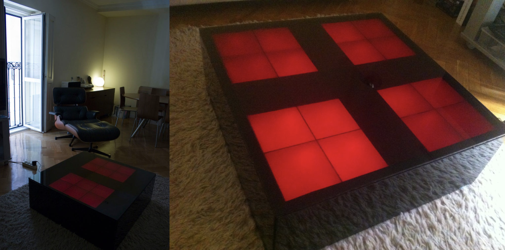

Some of my projects
These are some project I have done during these years.
Projection mapping software and Multi-projector correction software
In 2018 I decided to make a completely new application to calibrate Multi-Projector systems based on what I had learned during my Ph.D. I also reused some of the algorithms from that software to make an automatic calibration system for Projection Mapping. Here are some videos of the results of that development. I planned to distribute some free demos of these applications once complete. Here are some videos of the results:
Projection mapping software
Multi-projector correction software
The Daft Punk’s Coffee Table replica

I started this project in 2007. Since the moment I saw the Coffee table that Daft Punk designed for Habitat I fell in love with it. Although I think that piece of furniture deserved the price, it was not sold anymore in 2007 so I thought that it would be an amazing project to create my replica and share the process with everybody. It reverse-engineered the table by looking at some online videos and doing some research. I designed all the table structures and electronics. The first iteration of the table worked with a PIC microcontroller connected to a computer that runs WinAmp and I programmed a custom plugin for that to capture the BPM’s of the music and change the light patterns synched with the rhythm of the music. Sometime later (2012) I changed that PIC with a Chumby Hacker Board connected to a microphone that analyzed the music of the room. The last version (2013) was running with a Raspberry Pi and could be configured with an iPhone App. It also was linked with a Twitter account and when someone mentioned @dp_table on Twitter it would scroll the message on the table.
I have some videos on my YouTube channel, and also wrote a short Instructable.
The mini cold-smoker
It was a small project I made in 2017 while I was experimenting with smoked sauces. I just wanted to make a cold smoker that was cheap and worked well enough. I ended reusing a coffee maker and some more parts I had lying around. Here is the result:
The Bamboo sofa
I started this one around 2014. I had always liked the bamboo furniture and the idea of doing some furniture that had no nails on it, just making joints between the bamboo sticks. After researching and taking some inspiration on the Internet, I designed it using SketchUp. It took me about one week to build the sofa. I did not document this one, but here are the results: